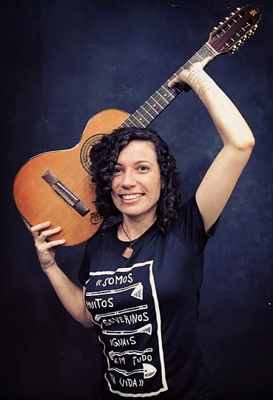

Corsi di musica
La musicista brasiliana Mariany Figueiredo de Souza

offre corsi di:
- canto
- chitarra
- ukulele
- cavaquinho
- educazione musicale per bambini.
I corsi si svolgeranno in aprile e maggio 2022, ogni mercoledì tra le ore 18 e 22 con partenza il 6 aprile. Se c’è interesse, possiamo offrire altre date.
C’è la possibilità di scegliere tra lezioni individuali e lezioni in piccoli gruppi. Vengono proposti corsi di 4 o 8 unità.
» Cliccate qui per il modulo di iscrizione.
Se hai delle domande, contattaci all’indirizzo aps.bembrasil@gmail.com o per telefono al 331 9879939.
La quota per la iscrizione deve essere versato sulla conta della associazione con oggetto “corso di musica tuo nome”
Bem Brasil APS
IBAN IT94P0808111601000301017136
Raiffeisenkasse Bozen/Bolzano
Educazione musicale per bambini I corsi di musicalizzazione mirano a stimolare, attraverso divertimenti, giochi e canti, l’apprendimento di concetti musicali di base come, ad esempio, i parametri del suono. Attraverso lo spasso, lo studente migliorerà le proprie conoscenze, la propria capacità di esprimersi, la coordinazione motoria, la propria percezione sonora e spaziale e la socializzazione con gli altri bambini.
Canto Nelle lezioni di canto verranno affrontati argomenti come la tecnica vocale, dove lo studente conoscerà la struttura fisiologica della voce umana, lavorando su esercizi di respirazione, articolatori e risonatori. Esercizi vocali (vocalises) per allenare e migliorare l’emissione e la proiezione della voce, la dizione, l’articolazione, l’estensione vocale, l’accordatura, il ritmo, il timbro, tra gli altri. Apprezzamento musicale brasiliano: sviluppo musicale della musica popolare brasiliana come samba, choro, canzone, pop, pop rock, bossa nova. Linguaggio musicale: conoscenza strutturale delle battute, metro, notazione musicale, solfeggio ritmico e melodico, tempi, segni di ripetizione e di articolazione.
Chitarra/Cavaquinho/Ukulele Nella pratica strumentale, a seconda dello strumento ad arco prescelto, ne verranno studiati la tecnica, il repertorio, le caratteristiche e il linguaggio musicale. Come la conoscenza della tastiera dello strumento, degli accordi, delle tecniche di esecuzione dei ritmi brasiliani, della scrittura musicale (figure, tablature e spartiti), introduzione alla teoria musicale e al repertorio.